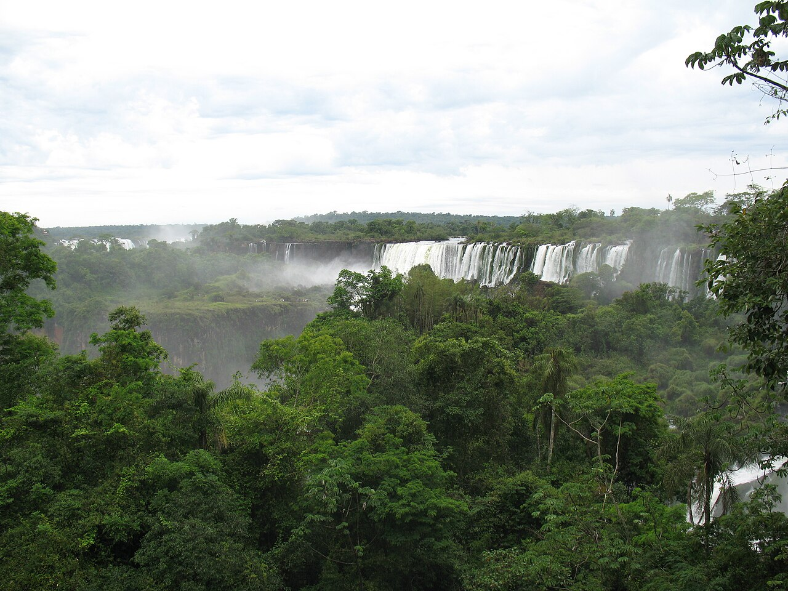
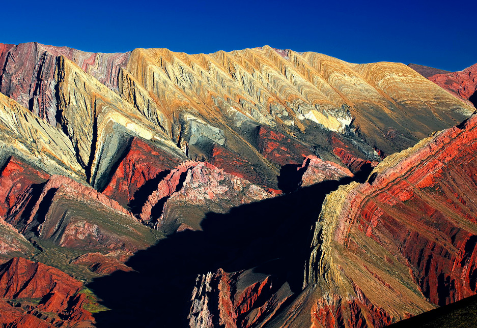
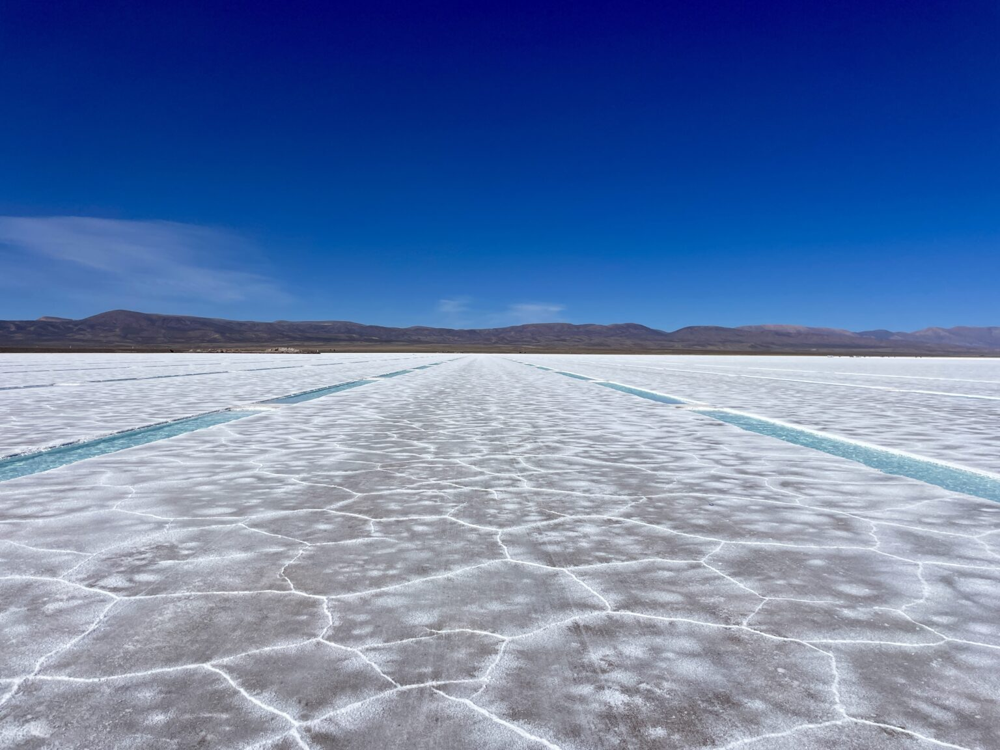

Sobre a Argentina
A história da Argentina é marcada por períodos de grande prosperidade e instabilidade política. Buenos Aires, a capital, é uma cidade cosmopolita com uma rica história e arquitetura.
Atrações Turísticas

Abjalang
Abjalangues são uma tribo que vive na margem esquerda do Nilo Branco.
A Argentina é um país que encanta os viajantes com sua rica diversidade de paisagens. Desde as montanhas nevadas dos Andes até as vastas planícies da Patagônia, o país oferece uma variedade de cenários naturais que impressionam por sua beleza e grandiosidade..

Akan
Norte Argentino: Cores e Cultura Quebrada de Humahuaca: Um cânion colorido com vilas tradicionais e paisagens montanhosas de tirar o fôlego.
A Argentina é um país que encanta os viajantes com sua rica diversidade de paisagens. Desde as montanhas nevadas dos Andes até as vastas planícies da Patagônia, o país oferece uma variedade de cenários naturais que impressionam por sua beleza e grandiosidade.".

Aku
Salinas Grandes: Um deserto de sal que se estende por quilômetros, criando um cenário surreal e colorido.
A Argentina é um país que encanta os viajantes com sua rica diversidade de paisagens. Desde as montanhas nevadas dos Andes até as vastas planícies da Patagônia, o país oferece uma variedade de cenários naturais que impressionam por sua beleza e grandiosidade..